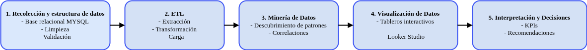

El analisis comenzo con los datos disponibles de la fundacion que fueron preparados y organizados para su analisis para lo cual se uso una base de Datos Mysql se organizo en tablas y se analizaron temporalmente los datos para entender su desarrollo
🇦🇷 Argentina
🇧🇴 Bolivia
🇵🇾 Paraguay
🇺🇾 Uruguay
🇨🇱 Chile
🇵🇪 Perú
🇨🇴 Colombia
🇪🇨 Ecuador
🇻🇪 Venezuela
🇨🇷 Costa Rica
🇭🇳 Honduras
🇸🇻 El Salvador
🇬🇹 Guatemala
🇳🇮 Nicaragua
🇵🇦 Panamá

Fuentes de Datos
Sistema contable
Planillas de Google Sheets
Datos de Donantes y Proveedores
Principales Resultados
El 17,6% del presupuesto se invierte en servicios siendo el gasto de mayo valor.
El 41,1% La mayor fuente de ingresos es del aporte de empresas a la Fundacion,superando al aporte del estado
No se observaron gastos excesivos o irregulares que deban analizarse.
Los proveedores corresponden mayormente a Argentina.